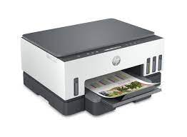

Una impresora es un periférico de ordenador que permite
producir una copia permanente de textos o gráficos de documentos
almacenados en formato electrónico, imprimiéndolos en medios físicos,
normalmente en papel o transparencias, utilizando cartuchos de tinta o
tecnología láser.